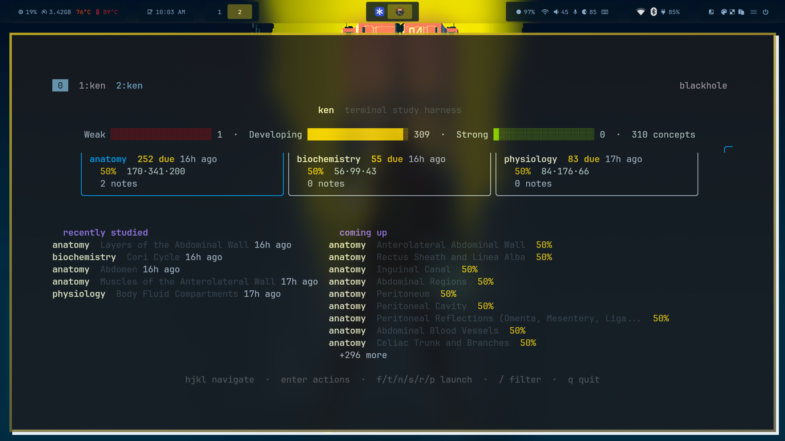

Confidence over cramming
A Bayesian confidence engine with time-decay tracks what you actually know — not how many cards you flipped today. Concepts you struggle with resurface; mastered ones fade naturally.
A terminal study harness that forgets nothing on purpose.

An agent writes Markdown. Plain .md files with YAML frontmatter — concepts, flashcards, quizzes — dropped into a folder. No special editor, no format conversion, no build step.
ken reads the folder, never writes to it. Content at ~/Documents/learn/subjects/ stays read-only. Your course material's git repo stays clean — no progress files, no state drift.
Confidence updates live in your state dir. Every flashcard flip and quiz answer feeds a Bayesian model with time-decay. Mastery lives on concepts, not cards — cards are evidence, not the thing being scored.
A Bayesian confidence engine with time-decay tracks what you actually know — not how many cards you flipped today. Concepts you struggle with resurface; mastered ones fade naturally.
Content is plain Markdown + YAML in a folder. Any agent — opencode, Claude Code, Cursor — can bulk-generate it. ken doesn't care how the folder was populated, only that the IDs are unique.
Content and progress are hard-separated. Course materials live in ~/Documents/learn/subjects/ (read-only). Progress lives in ~/.local/share/ken/. Your git stays clean.
git clone https://github.com/diamondBelema/ken.git
cd ken
go build -o ken ./cmd/ken
mv ken ~/.local/bin/